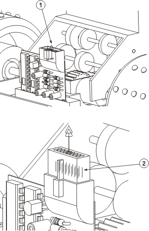

Place the rte1_cea_16pin_conn connector to the port location shown below (1). Use the PORT reference set and lock the engagement and rotation.
Make sure that the orientation of the 16 pin connector is with the terminal ports pointing up (2).
If you would like to qualify your own 16–pin connector instead of using rte1_cea_16pin_conn, proceed to the next page, Optional: Qualify the 16 pin connector. If you used the part that is already qualified, skip over to Show the wire clip in the harness subassembly.
